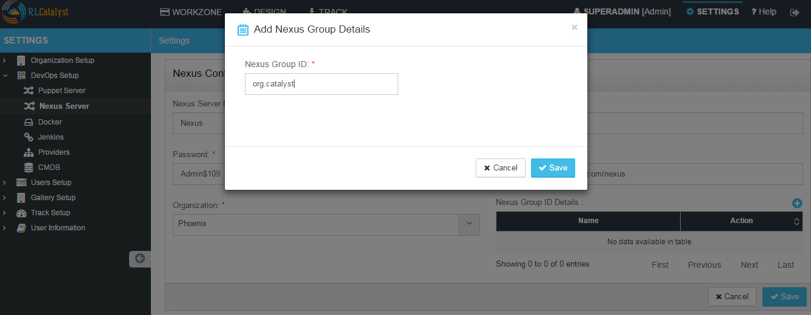
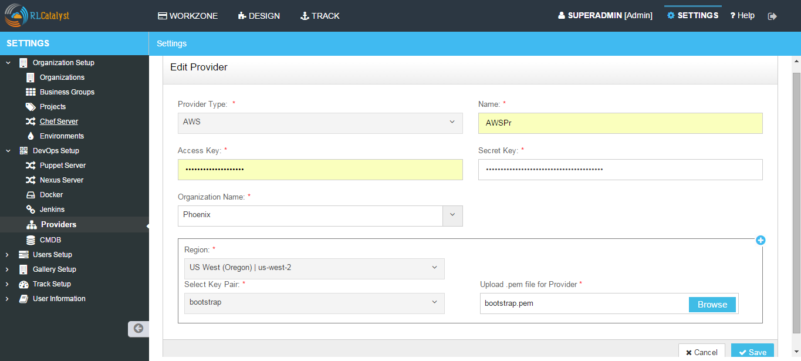
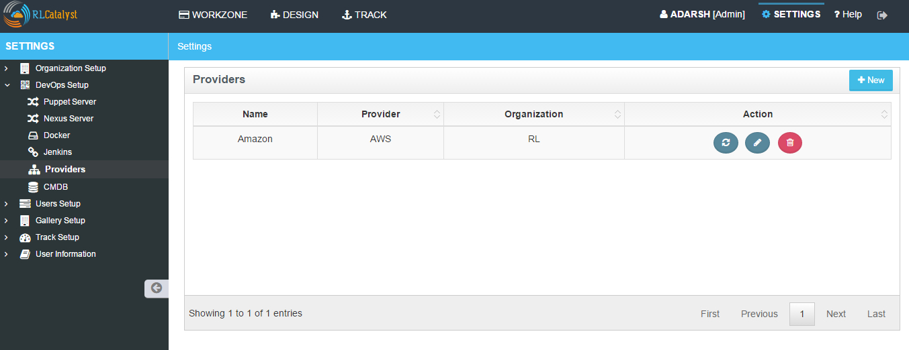
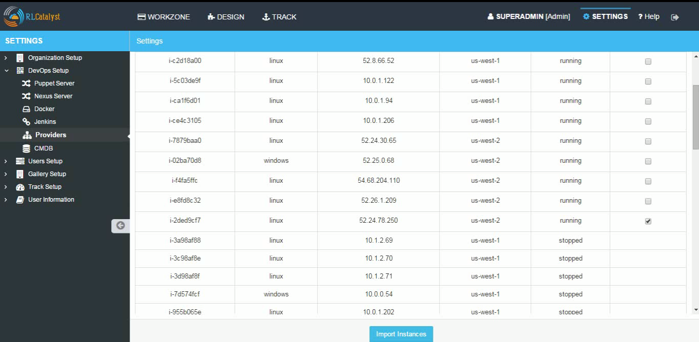
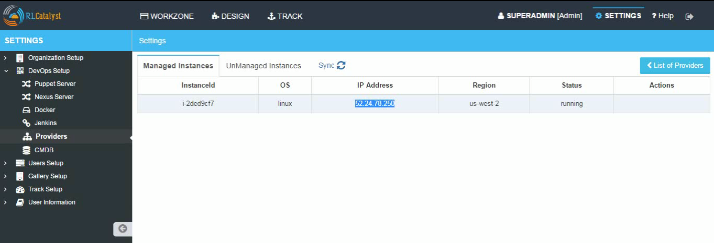

Puppet Server¶
Puppet Server is an application that runs on the Java Virtual Machine (JVM) and provides the same services as the classic Puppet master application. It mostly does this by running the existing Puppet master code in several JRuby interpreters, but it replaces some parts of the classic application with new services written in Clojure.
If you are using Puppet for your configuration management requirements, configure it in RLCatalyst. You can configure only one puppet server for one organization. Same puppet server cannot be associated with multiple organizations.
To configure a new puppet server follow the steps below:
- From the main menu click on Settings
- Once you click on Settings, from the side menu click on Devops Setup
- Click on Puppet Server
- Click on New button provided
- Enter the puppet server name in the Name box
- Enter the user name in User Nane field
- Enter the Hostname in Host Name field
- Choose the organization from the Organization drop down list
- Choose the Authentication by selecting Password / Pem file
- Enter Password / Upload the pem file

- Click on Save button
- Now your Puppet server is configured and listed in the Puppet Server Management page

Import nodes from Puppet Server
You can import existing nodes from the configured puppet server into RLCatalyst by selecting the required Business Group and Project. These imported nodes can be operated from the Workzone.
- To import the existing nodes click on Import button
- Select the node and the respective Environment for the dropdown
- Select the environment from Environment drop down list for the node to be imported
- Select the respective checkbox in the Action column
- Click on the Import Nodes button
- Select the business group from Business Group drop down list
- Select the project from the Project drop down list
- Enter the user name to access server for import in the User Name box
- Choose authentication type from the Choose Authentication Type drop down list. RLCatalyst provide two types of authentication, you can either choose Password or by uploading the PEM file
- Type Password or upload PEM file
- Click on Import button
- Close the popup containing the success message ‘Node imported’
- The imported node will be available in the respective Environment of the Workzone
Note: For the imported node using puppet server , Puppet client run icon will be shown.
Hereby attaching a video which will demonstrate as in how to Create Puppet in RLCatalyst:
Nexus Server¶
Nexus is a repository manager. It allows you to proxy, collect, and manage your dependencies so that you are not constantly juggling a collection of JARs. It makes it easy to distribute your software. Internally, you configure your build to publish artifacts to Nexus and they then become available to other developers. You get the benefits of having your own ‘central’, and there is no easier way to collaborate.
RLCatalyst works with different repositories where you have kept your artifacts . If you have a nexus repository, add it here
To configure a new Nexus server follow the steps below:

- From the main menu click on Settings
- Once you click on Settings, from the side menu click on Devops Setup
- Click on Nexus Server
- Click on New button provided
- Enter the Nexus server name in the Nexus Server Name field
- Enter nexus server username in the User Name field
- Enter nexus server password in the Password field
- Enter nexus server URL in the Nexus Server URL field
- Choose the organization from the Organization drop down list
- Click on + icon present next to Nexus Group ID Details and enter valid Nexus GroupID and save
- Click on Save button
- Now the Nexus server setup is ready and listed in the Nexus Server page

Hereby attaching a video which will demonstrate as in how to Create Nexus in RLCatalyst:
Once Nexus Server is configured you have to associate Repository details to your Project. Follow the below steps:
- Go to Projects Page
- Edit your Project
- Click on + icon present next to Repository Details
- Select your Repository Server and Repository Name

- Click on Save button on Add Repository Details page
- Click on Save button on Edit Project Page
Configure Docker¶
Docker is all about making it easier to create, deploy, and run applications by using containers. Containers allow a developer to package up an application with all of the parts it needs, such as libraries and other dependencies, and ship it all out as one package.
You can configure the Docker setup with RLCatalyst. To configure the Docker setup follow the steps below:
- From the main menu click on Settings
- Once you click on Settings, from the side menu click on Devops Setup
- Click on Docker
- Click on New button provided
- Select the Organization from the Organization drop down list
- Provide a reference name in the Reference Name field
- Provide the registry in the Docker Hub Registry field provided
- Provide the Docker user ID in the User ID field
- Provide the email address to connect to the Docker in the Email Id field
- Enter the Docker password in the Password field

- Click Save button
- Now Docker is successfully configured to RL Catalyst
Hereby attaching a video which will demonstrate as in how to Create Docker in RLCatalyst:
Configure Jenkins¶
Jenkins is CI/CD tool which can be used for build and deployment automation. You can configure the Jenkins setup with RLCatalyst.To configure the Jenkins setup follow the steps below:
- From the main menu click on Settings
- Once you click on Settings, from the side menu click on DevOps Setup
- Click on Jenkins
- Click on New button provided
- Select the Organization to which the Jenkins server will be attached to
- Enter the name in the Name field
- Enter the Jenkins Server URL
- Enter the user ID in the User ID field
- Enter the Jenkins password in the Password field

- Click Save button
- Now Jenkins is successfully configured to RLCatalyst
Hereby attaching a video which will demonstrate as in how to Create Jenkins in RLCatalyst:
Providers in RLCatalyst¶
RLCatalyst supports infra automation across providers like AWS, Azure, VMware, Openstack. Each provider needs to be configured with the proper credentials amd other required details before it can be used.
You can configure multiple cloud provider accounts of type AWS, AZURE, OPEN STACK and VMWARE within RLCatalyst.
To configure the Providers setup follow the steps below:
- From the main menu click on Settings
- Once you click on Settings, from the side menu click on Devops Setup
- Click on Providers
- Click on New button provided
- Select the provider from the Provider Type drop down list (e.g. AWS)
- Enter the name of the provider in the name field
- To add AWS Provider Account
RLCatalyst supports 2 types of authentication into the AWS account.
IAM Role - RLCatalyst supports authentication using IAM roles, in cases when user doesnt want to enter secret keys and access keys. This requires the RLCatalyst instances to be on AWS and is launched with an IAM role. The credentials will be acquired by rlcatalyst from its instance metadata . Only such provider account can be added per orgnaization in the current version of RLcatalyst . All AWS API requests made from catalyst by the default provider will be signed with security credentials fetched from instance metadata.
Prerequisites - RLCatalyst should be deployed on an AWS instance. This AWS instance should be launched with an IAM role with permissions to launch EC2 instances and CFTs. Also, new instances from rlcatalyst can only be launched in the same AWS account in which catalyst is running.
Refer to http://docs.aws.amazon.com/AWSSdkDocsJava/latest/DeveloperGuide/java-dg-roles.html for more details
To choose this mode, unselect the checkbox Requires Access Credentials
Secret key and Access key - This method requires the access key and secret key to authenticate access to the AWS provider account.
To choose this mode select the checkbox Requires Access Credentials

- Provide the access key in the Access Key field
- Provide the secret key in the Secret Key field
- Select the organization from the Organization drop down list
- Select the region from the Region drop down list where your provider is located
- Select the key pair for the provider from the Key Pair drop down list
- Upload the .pem file for Provider
- Click on Save button
- Now Provider is successfully configured to RLCatalyst
To add Azure Provider Account
- Provide the Subscription ID
- Provide the Client ID
- Provide the Client Secret Key
- Provide the Tenant ID
- Upload the Pem file
- Upload the private Key file
- Select the organization from the Organization drop down list
- Click on Save button
- Now Provider is successfully configured to RLCatalyst
To add OpenStack Provider Account
- Provide the Username
- Provide the password
- Provide the Host
- Provide the Project name
- Provide the Tenant ID
- Provide the Tenant Name
- Provide the Compute Service Endpoint
- Provide the Identity Service Endpoint
- Provide the Network Service Endpoint
- Provide the Image Service Endpoint
- Provide the Instance key Name
- Upload the pem file for Instance
- Select the organization from the Organization drop down list
- Click on Save button
- Now Provider is successfully configured to RLCatalyst
To add VMWare Provider Account
- Provide the Username
- Provide the password
- Provide the Host
- Enter the DC
- Select the organization from the Organization drop down list
- Click on Save button
- Now Provider is successfully configured to RLCatalyst
Hereby attaching a video which will demonstrate as in how to Create Providers in RLCatalyst:
Provider Sync for AWS¶
Provider sync allows you to import unmanaged instances to Catalyst. Once you import your node to catalyst appliaction it will bootstrap and will be displayed in Managed instances tab.
Managed Instance means Node which has been bootstrapped by Catalyst and Unmanaged instances means Node which has not been bootstrapped by catalyst.
Follow the below steps for AWS provider sync:
- Create an AWS provider as shown above. The Created provider will be available in Providers page

- Click on the Sync Instance button of the provider.
- Click on UnManaged instances tab

- Select the Instance with the Action to be imported

- Click on Import Instances button

- A pop up is displayed with the message “Instance Imported”

- Verify the Node is imported in the Environment

- Click on Control panel -> Action History and Wait until the Bootstrap succeeds

Now click on Back to Instances Tab
- Go to Settings -> Devops Setup -> Providers and click on Sync Instances button
The Bootstrapped node will be displayed under Managed Instances tab

Following video demonstrates how to do provider sync in RLCatalyst: